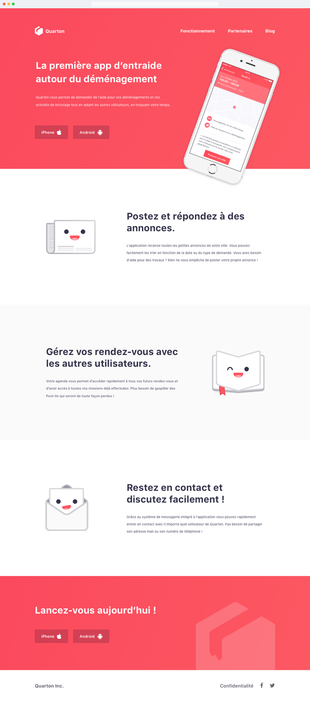
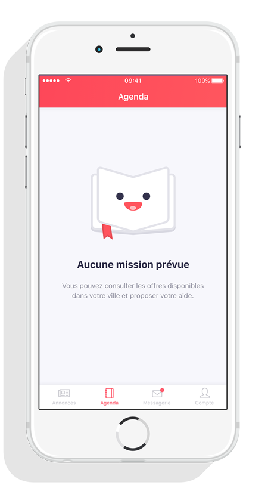
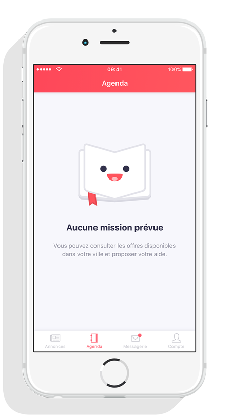

Quarton
Service de Time Bank
Quarton est un prototype de service de Time Bank autour du déménagement. L'idée est basée sur le fait que chacun d'entre nous possède, des compétences ou des connaissances à partager. Donner du temps pour faire bénéficier d'autres de ces compétences permet d'obtenir des "crédits temps" qui peuvent permettre de demander de l'aide à quelqu'un d'autre. Chacun peut ainsi aider l'autre tout en étant aidé à son tour, en troquant son temps sans échange d'argent.
Une charte graphique comprenant logo, pictogrammes, couleurs et typographies a d'abord été élaborée afin de créer une cohérence visuelle. Puis une maquette a été réalisée sur Adobe Illustrator pour concevoir l'interface et les différentes interactions. Cette maquette a ensuite été intégrée en HTML et CSS pour en faire un prototype fonctionnel.



 
